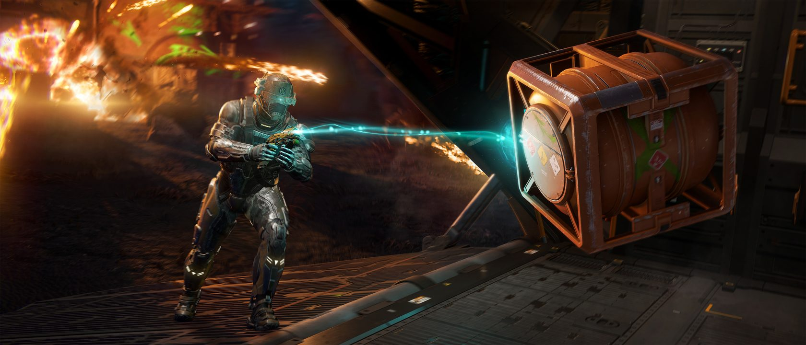
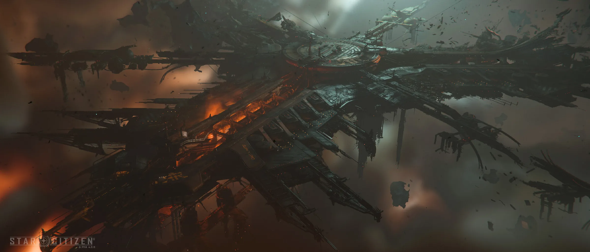
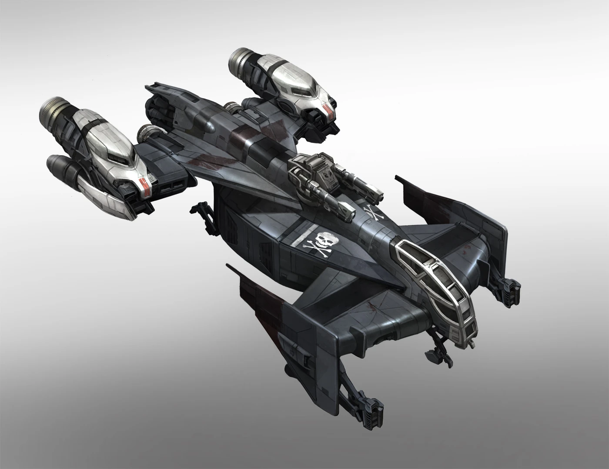

Pyros NachschubkriegSupply or Die
Ein PvPvE-Versorgungskrieg um Pyro: schlag dich auf eine von zwei Fraktionen, beschaffe Material durch Depot-Kaempfe, Bergbau und Salvage — und entscheide, wer das gesetzlose System kontrolliert.
HERRSCHT.
Supply or Die war ein einmaliges, story-getriebenes PvPvE-Versorgungs-Event in Pyro. Statt einer festen Frontlinie tobte der Krieg um Material: Jede Lieferung verschob den Kriegsfortschritt — und damit, welche Fraktion am Ende das gesetzlose System kontrollierte.
Waehle deine Seite
☣ Citizens for Prosperity
- Sammeln Industriegueter und die seltene Chemikalie Detatrine.
- Stellen daraus medizinischen Nachschub her.
- Ziel: Pyro stabilisieren und das System ordnen.
- Wer sie beliefert, macht die Headhunters zu Feinden.
⚔ Headhunters
- Beschaffen Salvage- und Mining-Ressourcen.
- Mit allen Mitteln — inklusive Kampf und Piraterie.
- Ziel: das gesetzlose Pyro in ihrer Hand behalten.
- Wer sie beliefert, macht die Citizens zu Feinden.
Spieler waehlen eine von zwei Fraktionen und beliefern sie — die Gegenseite wird dadurch automatisch feindlich.
Drei Wege, den Krieg zu speisen
Depot-Kaempfe
PvPvE-Gefechte um umkaempfte Depots: kaempfe gegen KI und rivalisierende Spieler, sichere die Vorraete und liefere sie an deine Fraktion.
Mining & Refining
Brich Rohstoffe in Pyro ab, raffiniere sie und schleuse das Material in den Nachschub — die Grundlage jeder Lieferung.
Salvage
Berge Wracks und Schrott des gesetzlosen Systems. Headhunters leben davon — und beschaffen sich den Rest notfalls mit Gewalt.
Kriegsfortschritt
Jede der drei Missionsarten speist denselben Balken. Genug Lieferungen, und deine Fraktion verschiebt die Kontrolle ueber Pyro.
Im gesetzlosen Pyro entscheidet nicht die Waffe — sondern der Nachschub.Supply or Die · Alpha 4.0.2
Die Citizens for Prosperity jagen nach Industriegueter und der seltenen Chemikalie Detatrine — Rohstoff fuer den medizinischen Nachschub, der Pyro stabilisieren soll. Jede sichergestellte Charge ist ein Schlag gegen die Headhunters.
Belohnungen fuer die, die liefern
Auf Stufe 2 winkte die Ravager-212 Outcast — eine Twin-Shotgun im Outcast-Stil, gemacht fuer die Nahdistanz des Versorgungskriegs.
Auf Stufe 3 kam das Outcast-Lackpaket obendrauf: passende Lackierungen fuer MISC Fortune, Drake Vulture und MISC Prospector — die Arbeitstiere von Bergbau und Salvage.
Media

⤢ ⤢
⤢
⤢
⤢Quelle: offizieller Star-Citizen-YouTube-Kanal & Star Citizen Wiki (© Cloud Imperium Games). · Auf YouTube ansehen ↗